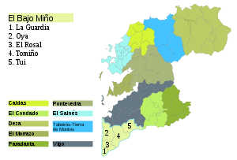

Visitando o Baixo Miño
Lugares que visitar
Lugares de Oia
Lugares de Tui
Lugares de O Rosal
Lugares de Salceda
Lugares de Gondomar
Distancias y información
Visita mi blog personal
Visita mi curriculum
Recetas ganadoras 2021-2022
Bocata
Pizza
Tortilla
Postre